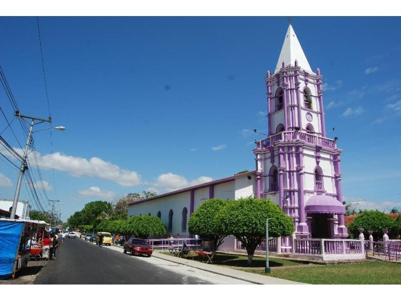

Atalaya es un corregimiento y ciudad cabecera del distrito en la provincia de Veraguas, República de Panamá.
Es el distrito mas pequeño de la provincia de Veraguas tiene aproximadamente 155 kilómetros cuadrados.
La localidad tiene 4.924 habitantes.
Conocido también como "San Miguel de la Atalaya", cuenta como mayor atractivo la Basílica Menor San Miguel Arcángel, que es la iglesia del Santo Jesús de Nazareno de La Atalaya.
| Coordenadas | Entidad | Superficie | Altitud | Población |
| 8º03' N 80º55'0 8.05,80.92 |
Ciudad de Panamá. Provincia de Veraguas. Distrito de Atalaya. |
47.6 km2 | Media 89 m.s.n.m |
4.924 |
Jesus Nazareno de Atalaya:Popularmente conocido como el Nazareno, es una imagen que se encuentra en la comunidad de Atalaya, la cual todos los años es visitada por mas de 2000 mil peregrinos de todos los lugares, estos se dan cita a visitar la imagen desde el miercoles de cenizas hasta el domingo de ramos.
La mayoria de los peregrinos caminan desde su residencia hasta atalaya, caminando largas distancias para pagar los milagros o hacer peticiones al cristo.